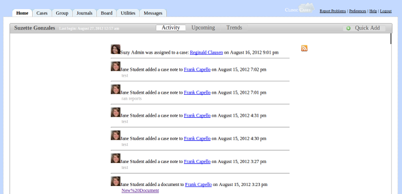
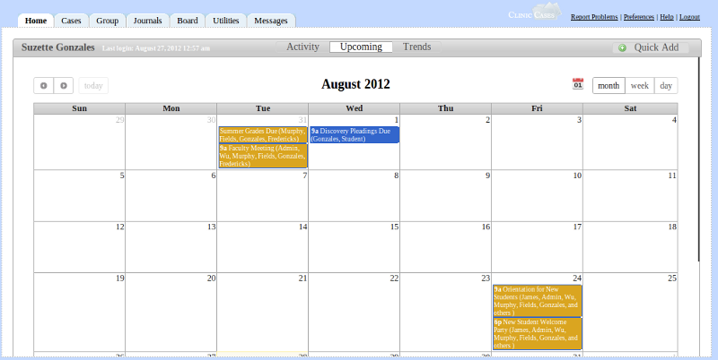
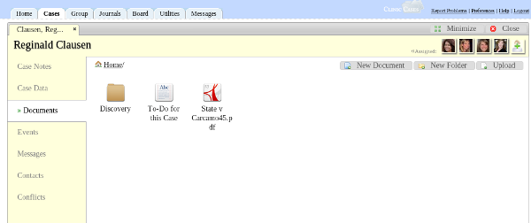

ClinicCases is a web-based case management system designed specifically for law school clinics. It is designed to be easy-to-use with a minimal learning curve.
Once your ClinicCases is installed on your server (see Installation), here's how to get started. ClinicCases ships with three pre-defined user groups: Administrators, Professors, and Students. These groups can be customized. You should log in using the default administrator account:
You will then be prompted to change your password. Once that is done, click on the Users tab. You should see that there is only one active user, Temp Admin. You should add at least one new administrative user by clicking on New User in the upper-right hand corner.
Be sure to include your email address in the new user information. Check to see if your mail server is working and then check your email for an email with a temporary password to the new account. Log on toClinicCases with these credentials and then change your password. You can now delete the Temp Admin account by going to Users, opening Temp Admin and pressing delete.
Other users can get accounts in one of two ways: 1) You can add them by clicking on "New User" and inputting the appropriate information for each user or 2) new users can sign themselves up. To do the latter, users should click on "Need an Account?" on the login page. They will be prompted for the information. You should then receive an email fromClinicCases notifying you that a new user has signed up. You (or anyone with an administrative account) must approve the application before that user has access. To do this, go to the Users tab. You should see a dialog prompting you to approve the application like this:

If you click yes, you will be brought to a list of new users to be activated. You can either 1). click on each individual user, review the information, and then set his/her status to active or 2) using the menu at the bottom of the screen (where it says "With Displayed Users"), select "Make Active." It is important that an administrator review each new user application to ensure that it is a legitimate application and not spam.
Once you have activated the new user, he or she will receive an email confirming that the account is now activated. The user can log in with the username provided in the email and the password that he or she provided when submitting the application.
If the user application is invalid (a spam sign-up or a duplicate account, for example), you can delete the account by pressing "Delete."
Once you have your users set up, you will want to enter some cases.
The Home tab is designed to give you a quick look at what's going on. It's broken up into three sections, Activity, Upcoming, and Trends.
Activity - Shows you the latest actions taken on ClinicCases which are relevant to you.

Assuming the default groups are set, professors see every action on a case to which they are assigned and every action taken by users who they supervise. Students see only every action taken on any case to which they are assigned. Administrators see information about the opening and closing of cases and about new account requests. All users see information about board posts.
An RSS feed of this activity is available. Click the RSS icon next to the activity stream and you will be directed to your rss feed. Add the URL of the feed to your favorite feed reader. The feed is secured using a private key which is known only to you. If you suspect that your feed may have been compromised, you can reset the key by going to Preferences and clicking on Private Key.
Upcoming - Shows upcoming events which are relevant to you.

This is a calendar which shows all events to which you have been assigned. Events can be added in two ways 1) From inside a case, by clicking Events and then "New Event" or 2) using the Quick Add button on the Home page. You can switch between Month, Week, and Day views. Clicking on an event will bring up a details dialog which will show who is assigned to the event and other relevant information.
An Ical feed of your events is available by clicking on the Ical icon at the top of the calendar. Add the URL of the feed to your calendaring program (e.g, Google Calendar). Instructions on how to do this for your specific calendaring program are probably available by Googling "how to add Ical feed to [insert name of your calendaring program]."
Trends - Shows graphical data about user and case activity.
Depending on your group, Trends shows you graphical information about activity on ClinicCases. Professors will see which students are the most active over time and which cases have the most activity. Students will see information about their activity and the activity of others in their group. Administrators will see clinic-wide information about case and user activity.
As of Beta 4.2, Trends is not yet implemented. Further documentation will be added once the feature is complete.
Quick Add - Quickly add data to ClinicCases

The Quick Add button is designed for you to quickly enter case notes and events without having to take the extra steps of navigating into a case. Clicking on the button will bring up a dialog with a choice to add a case note or an event.
With a case note, you select the appropriate case from the list of case to which you are assigned, add a time value, and then add a note. After you click "Add", the case note will be automatically filed in the case. Note that the default choice in the case list is "Non-Case Time." This is the only place in ClinicCases to record activity not associated with a case. Activity filed here can include things such as class time, attending orientation, etc. As of Beta 4.2, there is no way to delete or edit non-case time.
With an event, you enter the title of the event, where it is taking place, and the start and end times. You can then associate the event with a case by selecting from the drop-down list. In the field labeled "Who?", you type in the names of everyone who is responsible for this event. If you choose a group, everyone in that group will be responsible and will see the event in their calendar feeds. Please note that if you do not add yourself to the event or you are not in one of the assigned groups, you will not see the event in your calendar.

The cases table shows you a list of all cases you are allowed to view. If you have administrative privileges (i.e.,"view_all_cases" is set to "1" for your group in the cm_groups table - see customizing groups), you will see all cases on the system. All other groups only see cases to which they have been assigned.
Open/Close Filter - The default filter is set to display only cases that are open. An open case is defined simply as any case which has no date closed. You can switch the filter to show only closed cases or all cases.
Search - The search box searches through all rows and columns (including those that are not displayed) for the search text you input.
Advanced Search - Do fine-grained searches

Clicking on advanced search will bring up a sub-header which allows you to search a specific column or combination of columns. You can, for example, search for all cases opened between two dates, search for all cases with a specific disposition, etc. When you are finished with your advanced search, click Reset and the table will be returned to its original state.
Sort - You can sort each column row by clicking on table header for that row (e.g, "Last Name"). Clicking the header again will toggle between an ascending and descending sort.
Columns - ClinicCases allows each user to determine which columns are displayed in his or her table.

Different users need different information from the cases table. An administrator might be interested in who opened a case and the case number, but a professor might be more interested in who is assigned to the case and what court is in. Because of this, ClinicCases allows you to choose which columns are displayed in your table. Just click on the Columns button and add a check by those columns which you wish to see. ClinicCases will remember your chosen columns and display them every time you return to the Cases tab. If you ever decide to go back to the default, just click "Restore Original" at the bottom of the columns list.
Print/Export - There are a number of options for getting your data out of ClinicCases. When you click on the "Print/Export" button you will see choices to Copy to Clipboard, Export to CSV, Export to Excel, Export to PDF, or Print. These actions will export the currently filtered data to the chosen format. Print/Export is useful for generating reports and for exporting your data to a spreadsheet program for further analysis.
Reset - Clicking the Reset button resets all filters on the table to the default (i.e, open cases). Note that ClinicCases remembers the state of your filter. So, if you were to search for all clients named "Smith" and then log off, when you return to the cases table later it will still display all clients named "Smith." You must press reset to clear that filter.
New Case - Administrative users (i.e, those with "add_cases" set to "1" for their group in the cm_groups table - _see customizing groups) will see a "New Case" button after the Reset button. Clicking on this will open a new case and prompt you to input the intake information for the new case. Once you have entered in the intake information, be sure to click "Submit". The new case will now be opened. You should next assign users to the case.
When you click on a table row in the cases table, the case detail will be opened.

Think of this as opening the manila folder your physical files are kept in and seeing everything divided into neat tabbed sections. There are seven sections for each ClinicCases file.
Case Notes - Case Notes are the primary means of recording information about case activity. They are the replacement for the "Timesheets" or "Memos to File" you may have in your paper files. Each case note records the date on which the activity took place, the amount of time in took, and a description of the activity. Note that in ClinicCases time is measured in 5 minute intervals by default. You can change this to 6 minute intervals by editing the configuration file (see configuration).
There are three buttons above the case note list: 1) Add 2) Timer and 3) Print. The first and third are self-explanatory. The timer button will launch a timer that records your activity on the case. This is useful for situations when you are working on a case in front of your computer (e.g, doing legal research).

Once you have clicked "Timer", it will continue to run until you turn it off. This means that, even if you close your browser, when you return to ClinicCases, the timer will still be running. It is therefore important to remember to click "Stop" to turn it off. When you do this, a dialog will ask you for a description of what you did. Once you provide that and click "Add", the case note will be filed away in the case with the correct time and information.
Case Data - Case Data is where intake information about the client (Address, date of birth, SSN, case type, etc) is kept. Users who are authorized can click "Edit" and change the intake information. Any user who is in a group with "edit_cases" set to "1" in the cm_groups table (_see configuration) can do this. By default, all users have this permission.
Documents - ClinicCases has a fully-featured file manager.

New Document - Clicking this will open ClinicCases' rich-text editor and create a new ClinicCases document. This is an alternative to creating a document on your desktop computer and is useful and time-saving for creating casual documents, such as digests of legal research, to-do lists, notes on interviews, etc.
New Folder - Clicking on this button creates a new folder. You name the folder by clicking under the folder ("New Folder"), typing in the desired name, and then pressing enter. Subfolders can be created by clicking into the folder and then repeating this process.
Upload - Clicking upload will prompt you to either upload files from your computer or to save a URL. Multiple files can be uploaded at the same time (in Chrome, Firefox, and Safari, not Internet Explorer) by holding down the control key as you select files. The types of files which can be uploaded are controlled by your configuration. By default, the following extensions are allowed: 'doc','docx','odt','rtf','txt','wpd','xls','ods','csv','mp3','wav','ogg','aif','aiff','mpeg','avi','mp4','mpg','mov','qt','ovg','webm','ogv','flv','bmp','jpg','jpeg','gif','png','svg','tif','tiff','zip','tar','gz','bz',and 'pdf'.
Renaming, Deleting, and Moving Files and Folders - Right-clicking on a file or folder will bring up a dialog which allows you to cut/copy/rename/or delete that item. You can also move items by dragging them to the desired folder. You can see meta-information about a file (who uploaded it, etc) by selecting "Properties" from the right-click menu.
Events -
Messages -
Contacts -